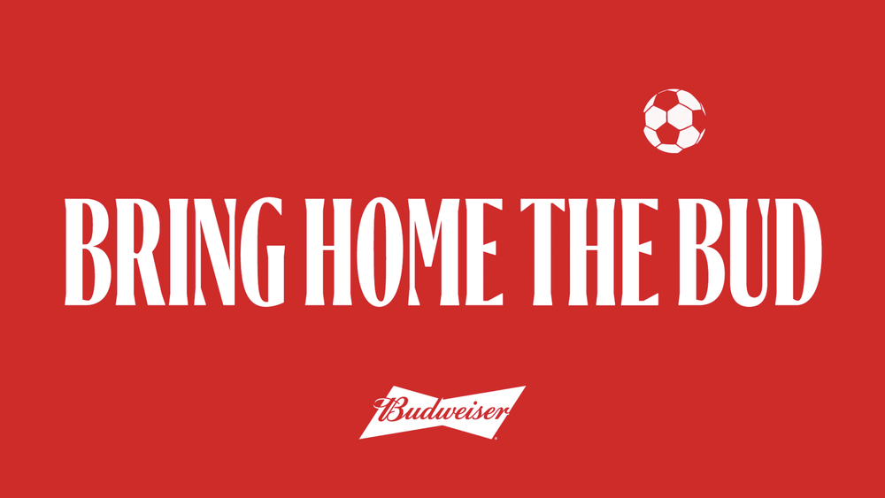
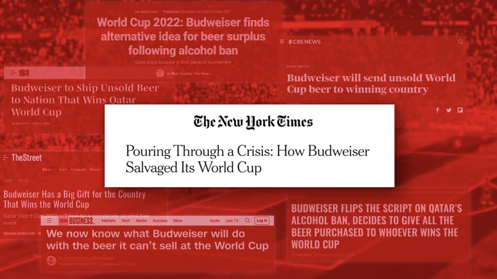
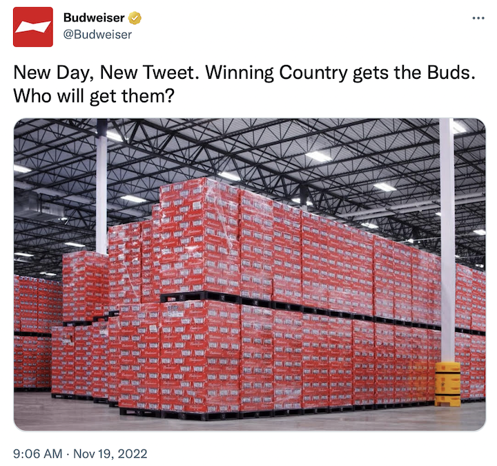

案例发生了什么



卡塔尔在开赛前两天限制场馆售酒，百威没有只发声明，而是把“卖不掉的啤酒”改写为赛果承诺：获胜国家将得到这些库存，用于冠军庆典。运营挫折瞬间变成全赛事都能等待的悬念。
先以一句社交帖子公开库存困境；三周内完成从规则、物流到冠军交付的执行转向；围绕“Bring Home the Bud”持续更新各队晋级与淘汰反应，最终把承诺落到冠军庆典。项目页自报获得 400 多万次品牌提及和 31 亿触达。
MARKETING KNOWLEDGE ROUTER · 营销知识路由器
营销启发卡
把历届经典的记忆点、商业结构和迁移方法放在同一层阅读。 卡片底部按主题连接全站相关案例、经典方法与深度文章。
核心动作
突发禁令的荒诞感、球迷看品牌如何接招的围观感，以及冠军把啤酒带回家的庆典想象；“New Day, New Tweet. Winning Country Gets the Buds.”。
传播与商业机制
被限制的恰好是产品本身，品牌因此能把真实库存、官方啤酒身份和冠军庆祝自然接在一起；先以一句社交帖子公开库存困境；三周内完成从规则、物流到冠军交付的执行转向；围绕“Bring Home the Bud”持续更新各队晋级与淘汰反应，最终把承诺落到冠军庆典。项目页自报获得 400 多万次品牌提及和 31 亿触达。
可复用的方法
危机响应的上限不是机智文案，而是把已经发生的业务问题改成一个可兑现的新机制。
适用条件、风险与证据
- 触达和提及来自项目页自报；酒类跨境运输、年龄限制、当地法规与责任饮酒必须优先于传播速度。
- 后续复盘还应补齐发布主体、时间线、真实执行图、媒介范围和结果口径；没有这些证据时，不把行业评价或赛事总热度写成品牌增量。
资料与来源
官方资料与原始来源
市场 / 权益
全球
官方赞助商/权益受限
创意打法
危机转向型；实时承诺型；冠军履约型；社交话题型
来源按品牌/官方发布、官方账号留存、权威媒体、获奖案例库分层记录；品牌与奖项自报结果不视作独立审计。